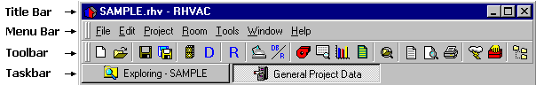

Program Basics (Tutorial Step 1) |
  
|
Program Basics (Tutorial Step 1) |
|
Before we create a new project, let's first look at a few of the basic elements of the program's main window.

Title Bar: Displays the name of the current project, if a project is open. If no project is open, the caption just says, "Rhvac".
Menu Bar: The customizable menu provides access to all of the program's features.
Toolbar: The customizable toolbar displays the items from the main menu that you will be using the most. If a project is open, most of the toolbar buttons will appear as they do in the above picture. If no project is open, several of the buttons will be grayed out.
Taskbar: Similar to the Windows taskbar, a button is displayed for each open child window. A child window is one that appears inside of the main window, such as the General Project Data window.
Now for the statusbar at the bottom of the main window.
Panel 1: Shows the current project, including the path. Moving the mousepointer over this panel will display a tooltip showing the entire path. During time consuming operations, this panel displays the type of operation that the program is currently performing.
Panel 2: Used for a progress indicator during time-consuming operations such as calculations, saving and opening the Drawing Board drawing, generating reports, etc.
Panel 3: Displays a disk with the word "Modified" any time after a project has been modified but the changes have not yet been saved. If the project does not need saving, this panel remains blank.